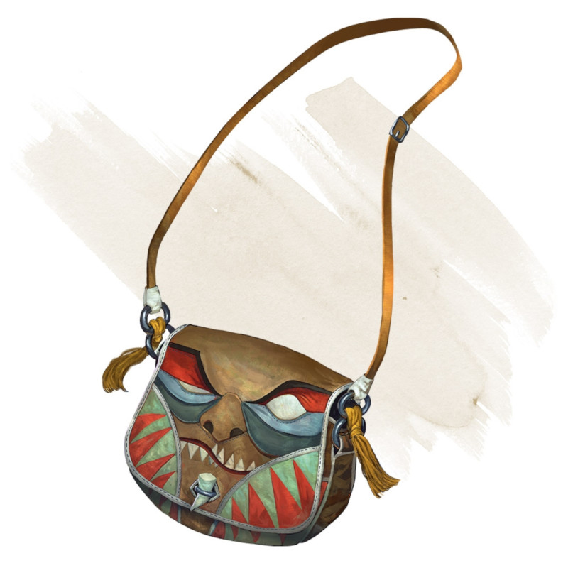

Bag of Devouring
[ Sac dévoreur ]
Wondrous item, very rare
This bag superficially resembles a bag of holding but is a feeding orifice for a gigantic extradimensional creature. Turning the bag inside out closes the orifice.
The extradimensional creature attached to the bag can sense whatever is placed inside the bag. Animal or vegetable matter placed wholly in the bag is devoured and lost forever. When part of a living creature is placed in the bag, as happens when someone reaches inside it, there is a 50 percent chance that the creature is pulled inside the bag. A creature inside the bag can use its action to try to escape with a successful DC 15 Strength check. Another creature can use its action to reach into the bag to pull a creature out, doing so with a successful DC 20 Strength check (provided it isn't pulled inside the bag first). Any creature that starts its turn inside the bag is devoured, its body destroyed.
Inanimate objects can be stored in the bag, which can hold a cubic foot of such material. However, once each day, the bag swallows any objects inside it and spits them out into another plane of existence. The DM determines the time and plane.
If the bag is pierced or torn, it is destroyed, and anything contained within it is transported to a random location on the Astral Plane.
The extradimensional creature attached to the bag can sense whatever is placed inside the bag. Animal or vegetable matter placed wholly in the bag is devoured and lost forever. When part of a living creature is placed in the bag, as happens when someone reaches inside it, there is a 50 percent chance that the creature is pulled inside the bag. A creature inside the bag can use its action to try to escape with a successful DC 15 Strength check. Another creature can use its action to reach into the bag to pull a creature out, doing so with a successful DC 20 Strength check (provided it isn't pulled inside the bag first). Any creature that starts its turn inside the bag is devoured, its body destroyed.
Inanimate objects can be stored in the bag, which can hold a cubic foot of such material. However, once each day, the bag swallows any objects inside it and spits them out into another plane of existence. The DM determines the time and plane.
If the bag is pierced or torn, it is destroyed, and anything contained within it is transported to a random location on the Astral Plane.
Dungeon Master´s Guide (SRD)
